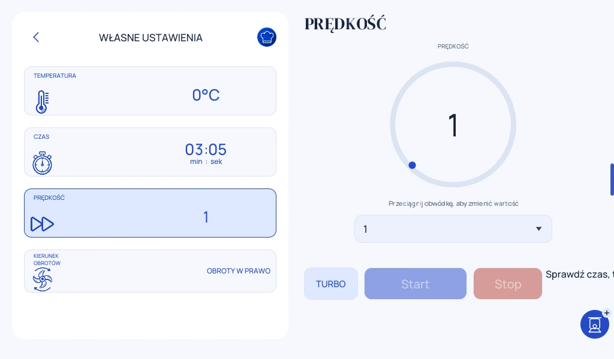
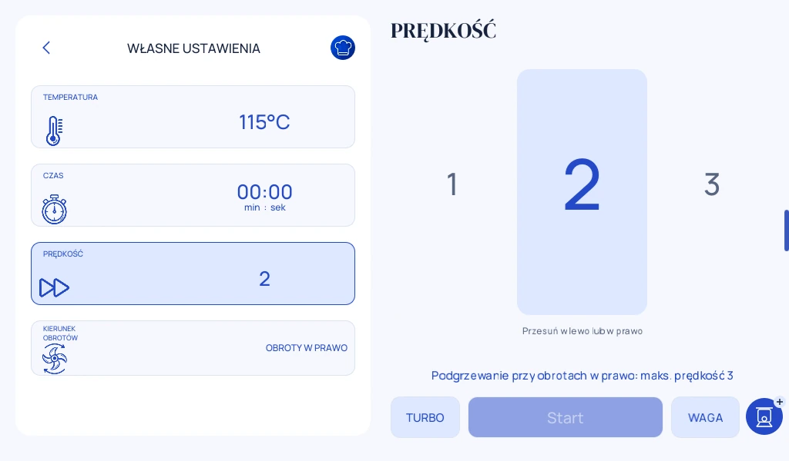
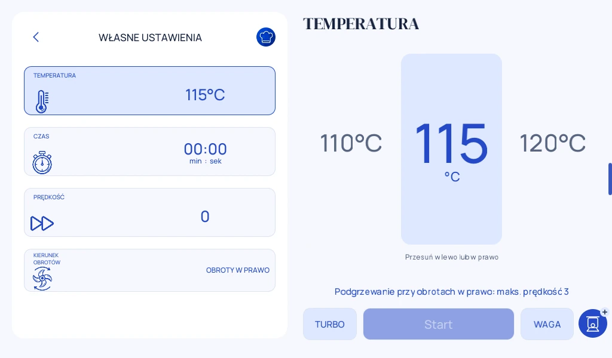
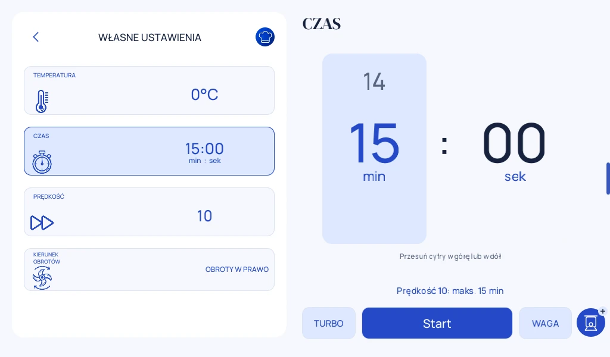

Monsieur Cuisine Connect ·
Impostazioni e scorciatoie nella 0.16.4
Dalla versione 0.15.3, ho cambiato il modo in cui il robot viene impostato sullo schermo. Minuti e secondi scorrere separatamente, la temperatura e la velocità si spostano sul lato, e dopo aver impostato tutto, basta premere Avvio. L'immagine del piatto può essere sviluppata attraverso lo schermo, e dalle scale, Turbo e Washback allo stesso passo della ricetta.
Temperatura e velocità spostate sul lato
Il primo editor aveva un cerchio ispirato allo Smart. Dopo le prove, ho ispessito il confine e ampliato l'area del tatto. Quando si sceglie una specifica temperatura o marcia, il livello di movimento delle dita era più conveniente. Il valore selezionato è grande e visibile al centro, e sui lati è possibile vedere le impostazioni adiacenti. Spostare a sinistra aumenta il valore, a destra lo abbassa. Ho rimosso la lista in piu' sotto la ruota.





Tempo in due colonne e uno Avvio
Toccare il campo del tempo, quindi spostare i minuti o i secondi in su o giù separatamente. Lo spostamento di una colonna lascia l'altra invariata. La manopola fisica regola la colonna attiva. Nei programmi lunghi come la fermentazione, le colonne mostrano ore e minuti. Le modifiche ai campi modificabili si applicano immediatamente. È possibile passare di volta in volta a temperatura e premere Avvio senza impostazioni di approvazione separate.
Nelle impostazioni manuali, a velocità 10 lo schermo mostra un limite di 15 minuti. Sul Connect questo limite vale per le velocità da 7 a 10. Quando si attiva il riscaldamento, un messaggio indica che la velocità massima è 3. Lo stesso limite vale per la rotazione inversa. Se le impostazioni lo consentono, il timer manuale arriva a 99 minuti e 99 secondi. I programmi automatici hanno intervalli propri.

Programmi di lettura e direzione del fatturato
Un tocco cambia direzione. Quando si gira a destra, si può vedere una lama con le frecce, e quando si gira a sinistra, si può vedere un lembo con le frecce. Ho aggiunto circa un terzo dei parametri e delle varianti della pasta. Torte dure, morbide e liquide hanno la loro grafica. L'intestazione del programma mostra una piccola icona dal menu.
Nella cottura delle uova, ho ingrandito le descrizioni delle dimensioni, grado di cottura e tempo. In ogni riga un campo blu è attivo, gli altri hanno uno sfondo bianco. Nella cottura a vapore, l'opzione Heat prima di contare ha una zona più grande e una distanza da Start e Stop. Un intervallo simile è confermato dall'assunzione di un antipasto e copertura per il taglio di verdure.


Immagine completa di piatti e piastrelle più corte
In una ricetta aperta, toccare il cinturino di foto due volte per vedere l'intera immagine in proporzione. Un tocco chiude l'anteprima e torna alla ricetta. Il gesto funziona nel catalogo offline Monsieur Cuisine e nelle ricette Adapted Pro. Nella directory Pro, la carta si riserva tre linee per il titolo, e il nome completo è visibile quando è aperto.


Turbo, Peso e Lavare come programmi completi
Turbo e Peso sono accanto a Start nelle tue Impostazioni. È anche possibile aprire un lavaggio dal menu galleggiante. Ogni scorciatoia mostra lo stesso schermo completo di un programma separato. Tornare alla ricetta ripristina la fase corrente e Ritorna al programma mantiene i parametri preimpostati. Per utilizzare Turbo, è necessario tenere premuto il pulsante sulla schermata del programma.


Tutte le versioni dopo 0.15.3
- 0.15.4 — L'anello della manopola fisica è spento quando Connect è messo a dormire e accende quando si sveglia.
- 0.15.5 - Interruttore gira con un tocco e una scelta separata di unità di tempo per regolare la manopola. In questa serie di lavori c'erano anche icone più grandi, varianti di torte e uova, descrizioni più chiare e campi più grandi di opzioni per vapore e antipasti.
- 0.15.6 — Anteprima a schermo intero di una foto di ricetta in entrambi i cataloghi.
- 0.15.7 — le piastrelle più basse nelle ricette pro adattate, con tre linee per titolo.
- 0.15.8 — campi di tempo tondo con selezione unità e pulsanti + e −.
- 0.15.9 — un editor di grande tempo separato con un bordo sulla destra e una scelta di unità.
- 0.16.0 — Impostazioni personalizzate ampliate fino a 99 min e 99 sec, pulsanti min e sec centrati, e il supporto di questa gamma nel modulo Connect.
- 0.16.1 — più del doppio delle dimensioni del perimetro di un grande editore e di una zona più ampia che risponde a una breve resistenza.
- 0.16.2 — Colonne del tempo verticale, Impostazioni istantanee, Avvia sotto Editor, Messaggi di limite e collegamenti Turbo e il peso nelle impostazioni proprie.
- 0.16.3 — selettori di temperatura e velocità orizzontali, grandi cifre e rimuovere l'elenco di configurazione supplementare.
- 0.16.4 — Schermi completi di strumenti di scorciatoia e ritorno allo stesso programma o passo di ricetta.
Test su Connect
Sul robot ho verificato lo scorrimento delle due colonne del tempo, il limite di 15:00 alla velocità 10, l’avviso sul riscaldamento, i comandi orizzontali e il ritorno dagli strumenti rapidi. Sull’esemplare di prova ho esaminato anche una lettura bloccata a 0 g. Il vecchio modulo del Connect e lo scollegamento dell’alimentazione non hanno ripristinato la risposta a un sacchetto da 1 kg. La causa resta da confermare.